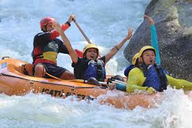
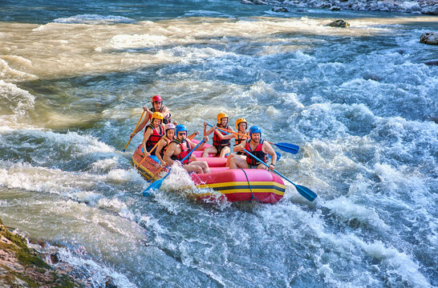
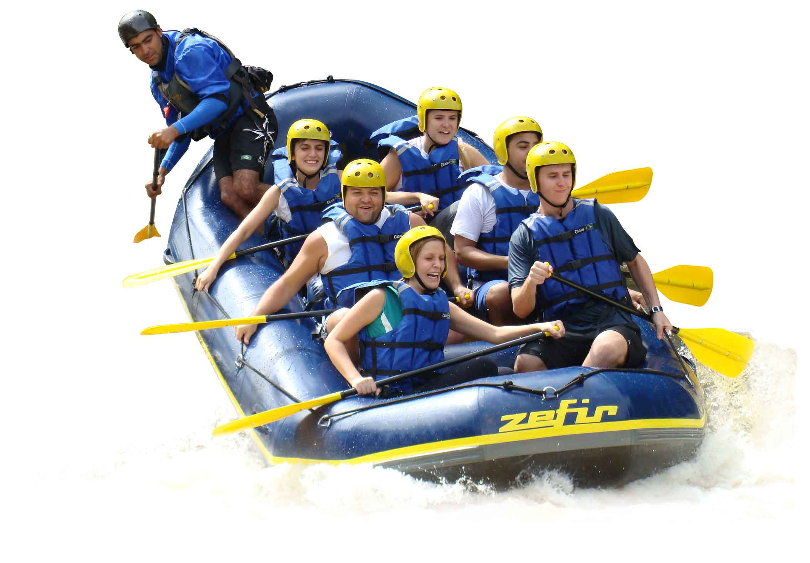
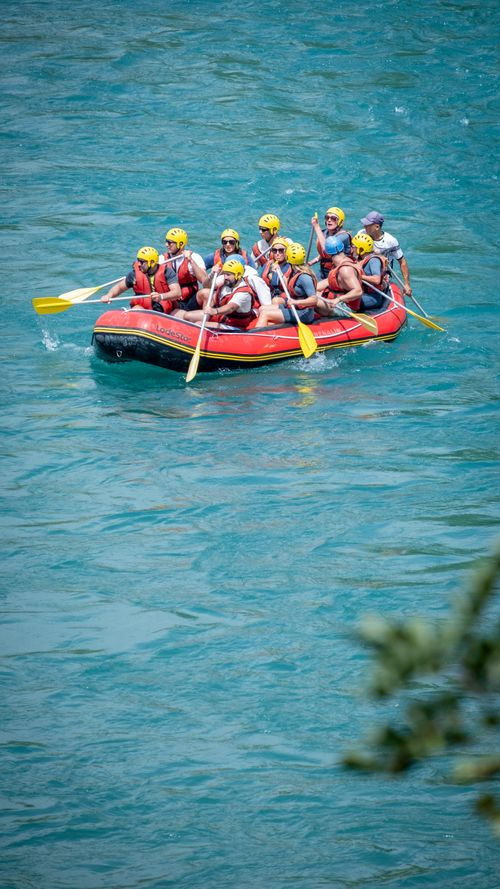
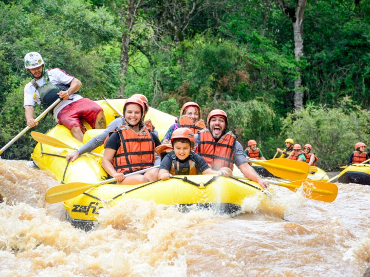

Nossa missão é proporcionar aventuras inesquecíveis com segurança, diversão e contato com a natureza.

Nossa missão é proporcionar aventuras inesquecíveis com segurança, diversão e contato com a natureza.
A Rio Abaixo Rafting nasceu da paixão por esportes radicais e pela natureza. Nossa missão é proporcionar aventuras seguras e inesquecíveis para todos os níveis de aventureiros.

Ao longo dos anos, guiamos milhares de visitantes pelas melhores corredeiras, criando experiências marcantes e aproximando as pessoas da natureza.




